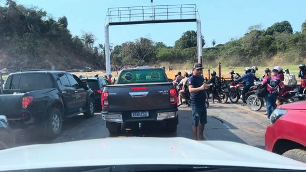

00:01:02.033
Carros e motocicletas ocupam a saída da balsa, sob estrutura metálica junto à rampa.
Porto da Vila Aninduba, Santarém (PA) · confirmado
O grupo registra o desembarque e o movimento de motos no início da etapa terrestre.
Transcrição · 00:00:43 | 00:00:51 | 00:01:00 | 00:01:09
Turismo Aqui — quadro de vídeo publicado no YouTube
Referência 1